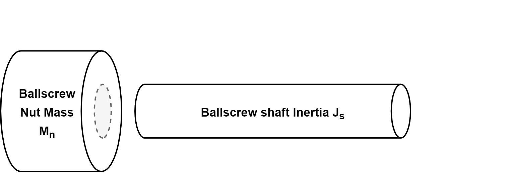
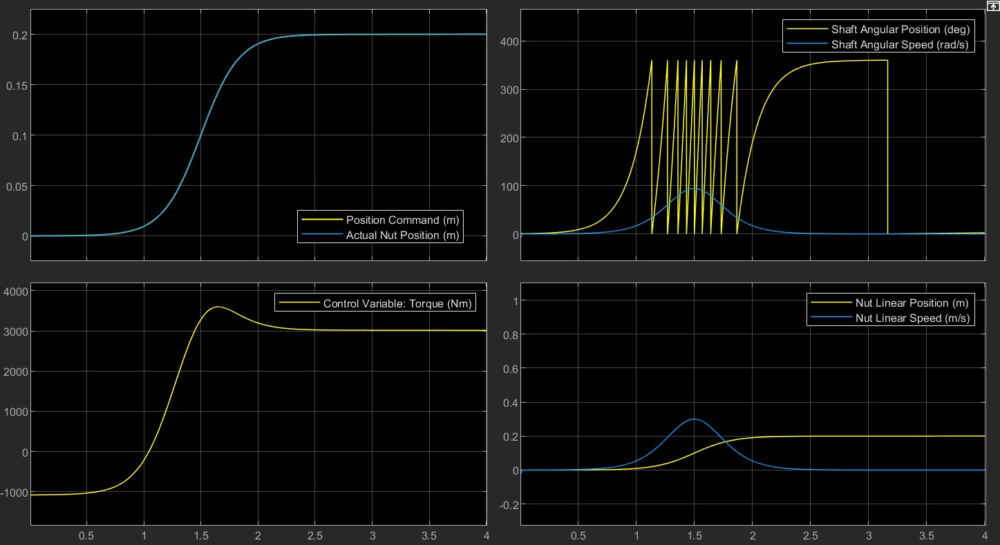

Simulation Work
Linear-Rotary Actuation
The model below is an example of first principles modelling of an actuator system. A ball screw actuator is one that converts rotational motion into linear motion , typically via an electric motor.

State space representation of the system was derived from a free body diagram which accounted for the stiffness () and damping () terms of the ball screw shaft ( subscript) and the ball screw nut ( subscript). The motion of the nut is described by This is not displayed in the image above.

The figure above shows control of the actuator model in response to a smoothed step function via PID feedback control.